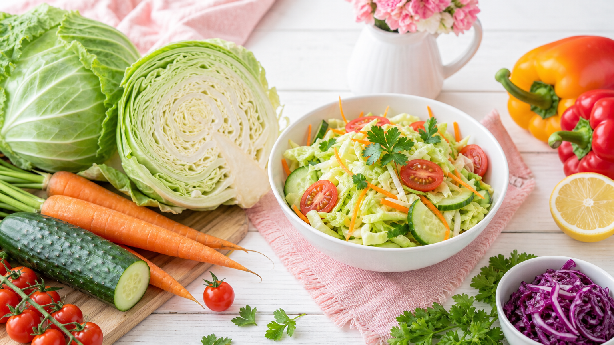

キャベツダイエットとは？まず結論からお伝えします
キャベツダイエットとは、食前や食事の最初にキャベツを食べることで、食べ過ぎを防ぎながら食物繊維・ビタミンCを補う食事法です。
特別な断食や激しい運動は不要。毎食の最初にキャベツ100〜150g（手のひら1杯分）を食べるだけで始められます。
1週間続けることで「食事量が自然に落ち着いた」「お腹の調子が良くなった」という声が多く聞かれます。
キャベツがダイエットに向いている3つの理由
① カロリーが極めて低い
キャベツ100gあたりのカロリーは約23kcal。同じ量のご飯（168kcal）と比べると、約7分の1のカロリーです。かさましに使うほど、1食の総カロリーを抑えやすくなります。
② 食物繊維で満腹感が続く
キャベツには不溶性・水溶性両方の食物繊維が含まれています。食前に食べることで胃が膨らみ、その後の食事量を自然に10〜20%程度減らすサポートになります。
③ ビタミンCとビタミンUで胃腸をサポート
キャベツ特有の成分「ビタミンU（キャベジン）」は胃粘膜を保護する働きがあります。食事制限中に胃が荒れがちな方にも優しい食材です。
🥬 キャベツダイエット 1週間スタートガイド
基本ルール・食べ方・量を一枚で確認！
手のひら1杯分
いちばん最初
ご飯の1/7
📋 1週間の実践ステップ
- 1 Day1〜2：まず朝食だけキャベツを先に食べる習慣をつける。生でも千切りでもOK。
- 2 Day3〜4：昼食にも追加。スープやコールスローにアレンジして飽きを防ぐ。
- 3 Day5〜6：夕食にも導入。3食すべてで食前キャベツを実践する。
- ✓ Day7：1週間を振り返り、食事量・お腹の調子の変化をメモする。
キャベツの食べ方3パターン｜生・加熱・スープ
①生（千切り・サラダ）
最もシンプルな方法。ビタミンCとビタミンUは熱に弱いため、栄養素をそのまま摂りたいなら生食がおすすめです。ノンオイルドレッシングやポン酢で味付けすると、カロリーを抑えながら食べやすくなります。
②炒め・蒸し（加熱調理）
かさが減るため一度に200〜300g食べやすくなります。食物繊維の摂取量を増やしたいときは加熱がおすすめ。豚肉や卵と組み合わせると満足感もアップします。
③キャベツスープ
水溶性の栄養素もスープごと摂れるのが利点。コンソメ・味噌・鶏ガラなど味のバリエーションが豊富で飽きにくいのが特徴です。寒い季節や夜食代わりにも活用できます。
1週間のキャベツダイエット献立例
以下は1週間の朝・昼・夜の食事にキャベツを取り入れた献立の一例です。カロリーを大幅に制限するのではなく、食前キャベツで食事量を自然に調整することを目的としています。
| 曜日 | 朝食 | 昼食 | 夕食 |
|---|---|---|---|
| 月 | 🥬千切りキャベツ＋目玉焼き＋ご飯 | 🥬コールスロー＋鶏むね定食 | 🥬キャベツスープ＋豆腐ハンバーグ |
| 水 | 🥬キャベツ蒸し＋ヨーグルト | 🥬キャベツサラダ＋サバ缶定食 | 🥬回鍋肉風炒め＋雑穀ご飯 |
| 金 | 🥬キャベツ味噌汁＋おにぎり1個 | 🥬キャベツ千切り＋焼き魚定食 | 🥬キャベツ鍋（豆腐・きのこ入り） |
毎日の献立をもっと詳しく知りたい方は、1週間ダイエット献立の詳しいプランも参考にしてみてください。
キャベツダイエットを続けるための3つのコツ
コツ① 味付けを毎日変える
同じ食べ方を続けると飽きが来ます。月曜はポン酢・火曜はごまドレッシング・水曜はスープと、週ごとにローテーションするだけで続けやすくなります。
コツ② カット済みキャベツを常備する
週の初めに1玉分を千切りにして保存容器に入れておくと、毎食すぐ使えて準備の手間が省けます。冷蔵保存で3〜4日が目安です。
コツ③ キャベツ以外の食事は我慢しない
キャベツだけに置き換える「置き換えダイエット」ではありません。主食・タンパク質・脂質はしっかり食べることで、栄養バランスを保ちながら続けられます。
食事管理全体のやり方を見直したい方は、朝昼晩の簡単ダイエットレシピ1週間分もあわせてチェックしてみてください。
キャベツダイエットの注意点
キャベツは優秀な食材ですが、食べ過ぎには注意が必要です。1日の目安は300〜400g程度（3食合計）。それ以上食べると、お腹が張ったり消化に負担がかかる場合があります。
また、甲状腺に関する疾患がある方は、生のキャベツを大量に摂ることについてかかりつけ医に相談することをおすすめします。
よくある質問
Q. キャベツダイエットはいつ食べるのが効果的ですか？
食事のいちばん最初に食べるのがポイントです。食前にキャベツを食べることで胃が膨らみ、その後の食事量を自然に調整しやすくなります。特に夕食前に取り入れると、夜の食べ過ぎを防ぐサポートになります。
Q. キャベツダイエットは何週間続ければいいですか？
まず1週間を目標に始めてみましょう。1週間続けることで「食前にキャベツを食べる」習慣が身につきます。その後は2〜4週間継続することで、食事全体のバランスが整いやすくなります。短期間で結果を求めず、食習慣の一部として取り入れることが長続きのコツです。
Q. 生キャベツと加熱キャベツ、どちらがダイエットに向いていますか？
どちらにも異なるメリットがあります。生キャベツはビタミンCやビタミンUを効率よく摂れます。加熱キャベツはかさが減るため一度に多く食べやすく、食物繊維をたっぷり摂りたいときに向いています。毎日の気分や料理に合わせて使い分けるのがおすすめです。